360 Video Rig for Eken H3 Action Camera
Personal Project
The completed rig with Eken H3's inserted. Each one is a different color besides two(Only 5 colors) to help keep track of which files came from which angle.
Download 360 Side STL Download 360 Edge STL(Not Repaired)Plans and Modeling
Choosing the Camera
My friend and I who are doing our South East Asia trip decided we could not live without taking some 360 video of it. We have seen more and more products coming out to serve this need, but many seem to cut corners in certain aspects. We have seen those which allow you to rotate the video, but truly are not 360, such as the 360fly. Others offer 360 video, but have very noticeable seams from having too few cameras. We kept all this in mind as we decided to opt for a classic 6 camera design, but wanted to insure we could do it affordably. In looking for cheap camera options, we considered my SJ4000 clone. It shoots in 1080p at 30 frames a second, but I knew it did not handle low light well, and 360 video tends to appear in very low resolution when stitched together, so I figured better cameras might be warranted. Six GoPro 4's would cost over $2000, but I found something of quality in the Eken H3.
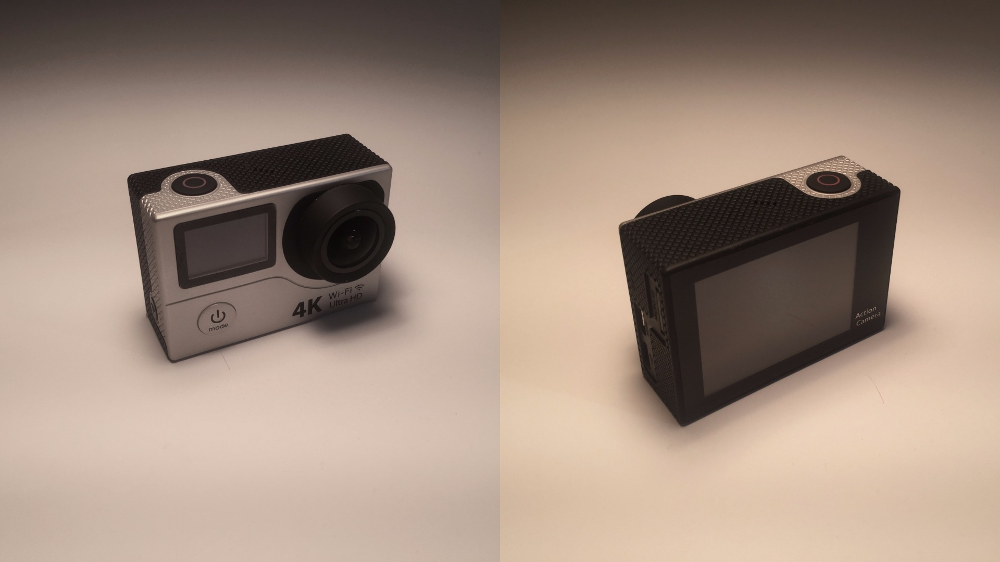The Eken H3 offers the quality and features of cameras like the Yi and the Hero 4 at a $70 price point. It features screens on the front and back( which are important for determining if you are actually recording on each device without taking it all apart), wifi connectivity, easily swappable batteries, and 2.7k video at 24fps as well as 1080p at 60fps. This will allow us to experiment with stitching at different frame rates and resolutions. Considering that Youtube has maximum resolution specs of 4k at 60fps, we will have to learn whether 6 1080p cameras can stitch together a 4k image or simply opt for 4k at 24fps if 2.7k per frame allows that. The only cons of the H3 in respect to the Hero 4 are a lack of syncing with a remote as well as lower quality video(In my opinion). The H3's pros over the other cameras include the swappable battery, price, resolution, and screens( 2" on back and almost 1" on the front). All in all, I am very happy with the choice and am excited to check whether the 2.4ghz remote can somehow be linked to multiple cameras at once(Update: It Can't).
Calipers to the Rescue
This was my first time ever using calipers, and I was pleasantly surprised to learn how well even a cheap pair works. Despite having many dimensions that would not allow perfectly accurate dimensioning due to the caliper design, my first attempt of a prototype ended up fitting the case extremely well. I plan on slightly changing it to account for a couple dimensioning errors, but still found that the waterproof shell still fit snugly in the case.
My model was designed to be as light weight as possible as I want to be able to easily lift it with my 450 size quad. I printed orginally at 25% infill but may lower this down to 10%. It was printed on a Makerbot Replicator 2 with .2mm resolution in PLA and took just under 5 hours to print.
Prototyping

The first protoytype side. A front-on photo showing the four protruding bits that interconnect. The hole in the center was made to see if the center aligned with the lens of the camera.
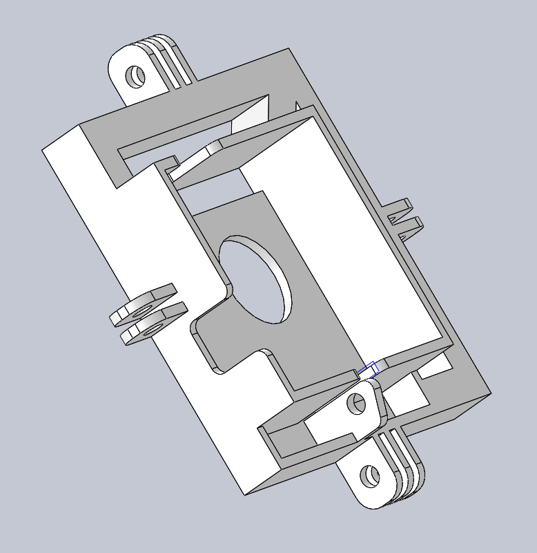A side angle where you can see the protruding bits and the hole which the waterproof case connects to.

A third view emphasizing the cutouts so that each button is accessible.
A Few More Words On Design
I modeled the design with a hole directly in the middle with the same diameter as the camera's protruding lense. This was intentional to be able to easily test to see if the lense ends up directly in the center. I did this to insure that all the cameras are in perfect alignment. My first print ended up with that hole a couple milimeters up and to the right of the camera's lense. I desire to test how this error affects the stitching of the images, but to save filament I will delay that in favor of greater certainty in stitching quality.
While not pictured, I printed the piece with two additional holes just below the the circles. These holes are there to give the frame the capability to capture sound when the housing uses its alternate backing, which lets in sound. Other notable features include the 4 protruding bits with holes, one on each edge, which allow each individual piece to connect to the rest. While it may have been capable to print the entire rig in less pieces, the set up allows for easier swappability should any piece break. Additionally, each whole is the diameter of the typical pin used on GoPro cameras and the Eken H3. Should I need any of these pieces, they can be taken from the rig and later replaced(Update: This was a smart move).
A piece I have yet to make for this is a corner design which will allow the rig to screw into typical mounts(Update: Done and Useful!). I considered printing this on each side piece so that every corner would have one, but I believe this may add unnecessary weight.
A design I wish I could have implemented is to use the holes from the waterproof case as one of the "protruding bit" holes. Doing this would allow me to use one less screw and nut on each side. However, this feature does not extend far enough down to position the lens in the center of each side.
More Pictures of the First Model Prototype
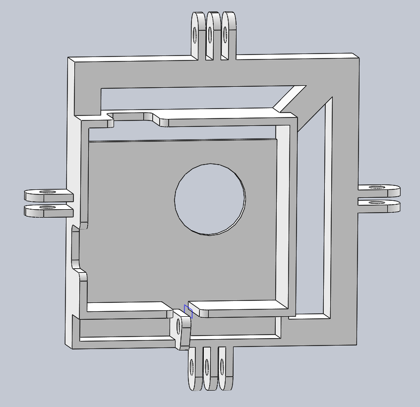 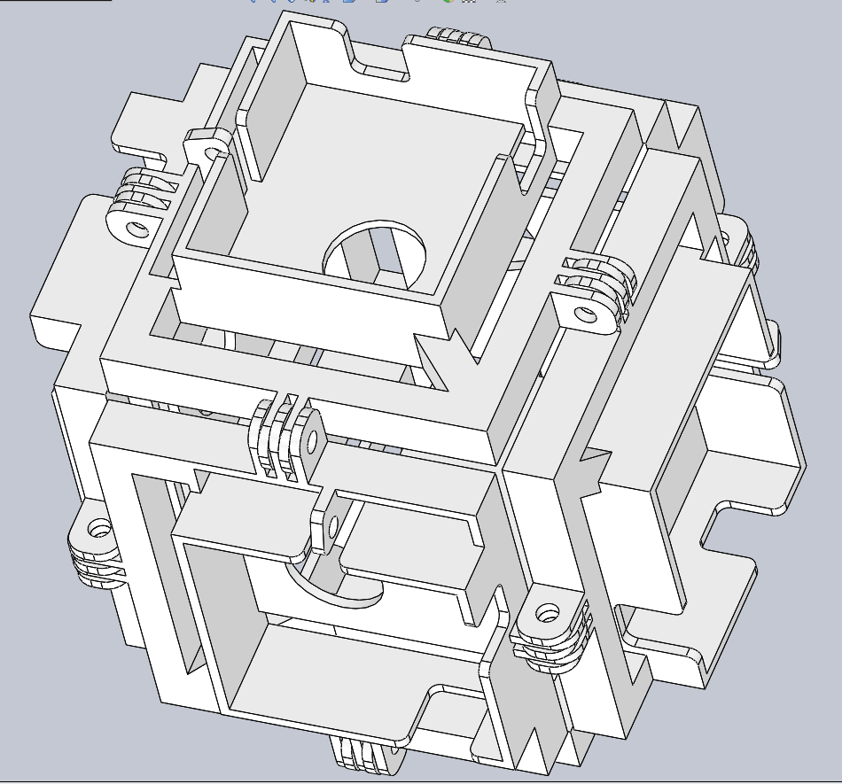This image shows how 6 sides can interlock to create a "cube". Each protruding bit has a hole that aligns with that of another side. This allows a bolt, to connect them together and make it rigid. These sides each will contain a camera pointing perpendicularly from the side to capture a 360 degree view.
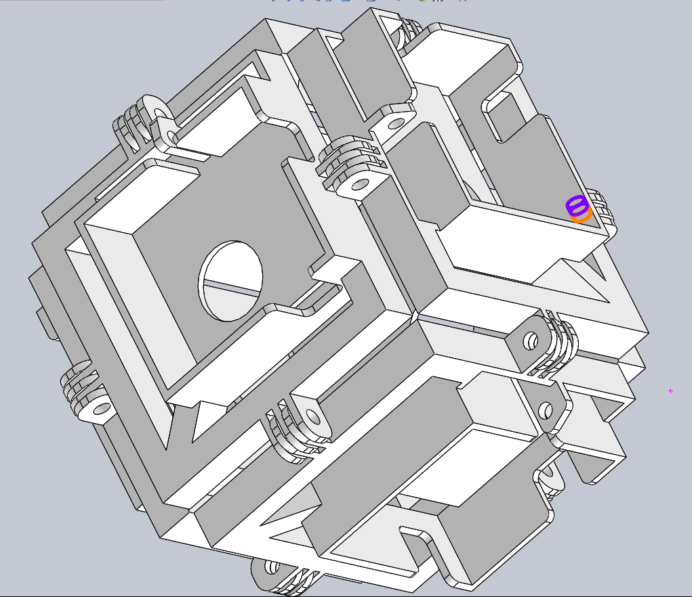Here the highlighted rings show where a pin would be placed between two sides' protruding bits.
First Prototype

Here from straight on you can see how the hole in the printed piece does not perfectly align with that of the waterproof case.


This shows how the hole of the waterproof case does not align with that of the printed piece- something I failed to account for in the dimensioning.

Here all the bolts of the same type as the Eken H3/GoPro are inserted to test for fit.
The "Final" Product
After Being Beaten Up On A Journey Across the World
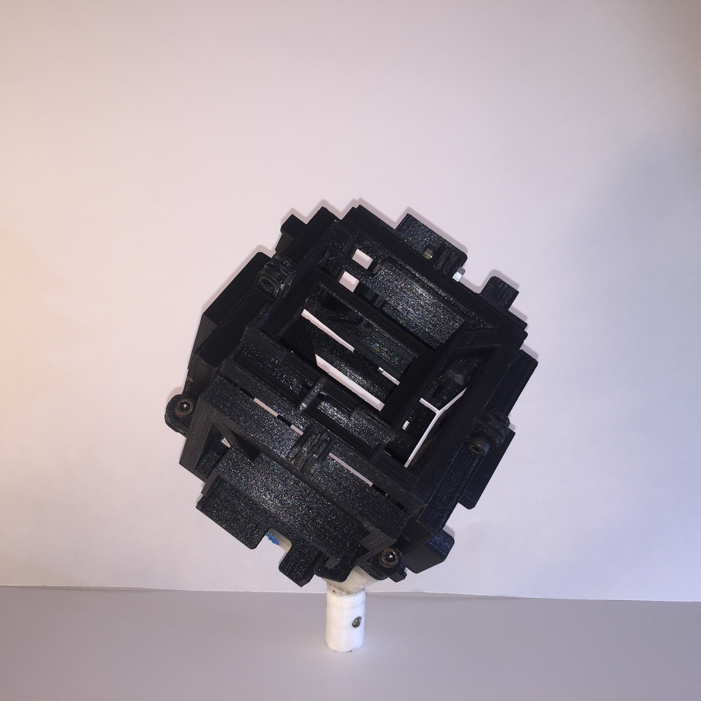Here is the entire frame attached to the pole mount(white, bottom). The pole mount is a simple cylinder with a hole on the side to pin through a 16mm pole. Additionally, this piece has a 1/4" bolt screwed through it that binds to the rig "edge" in clear(Difficult to see).
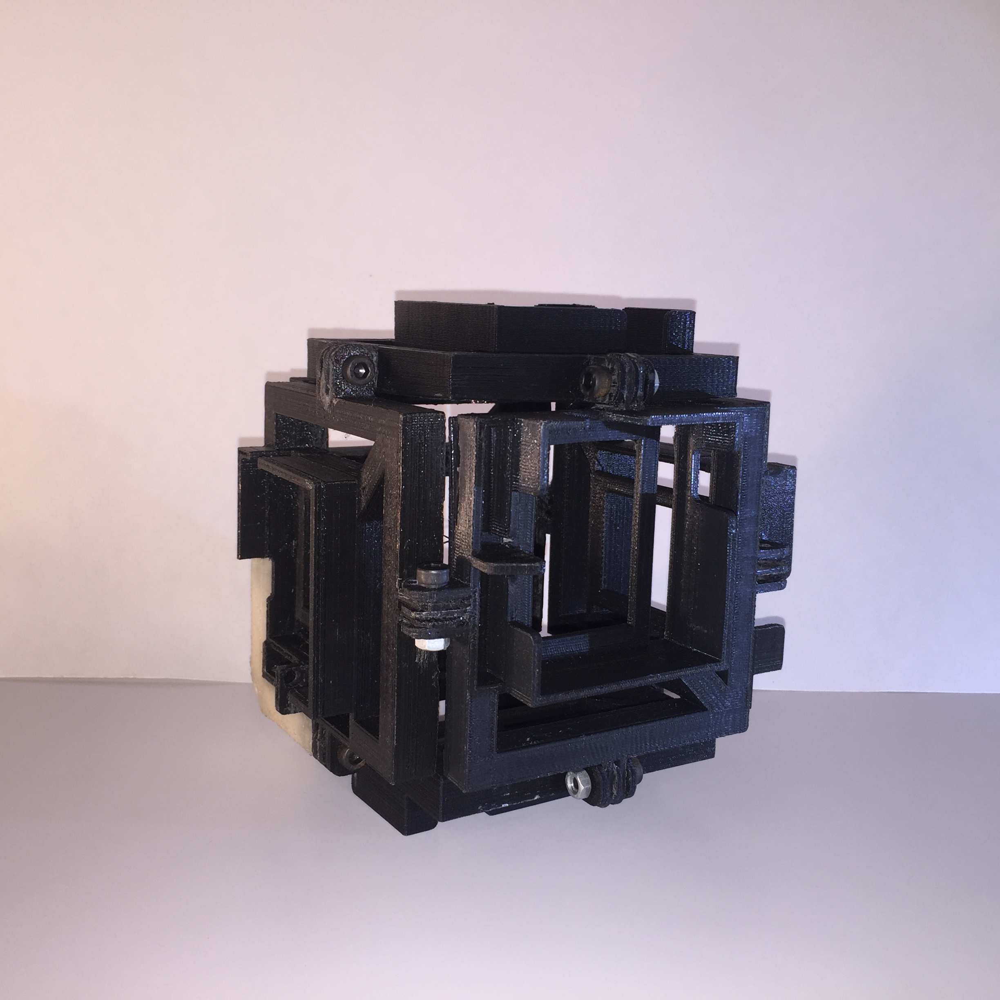 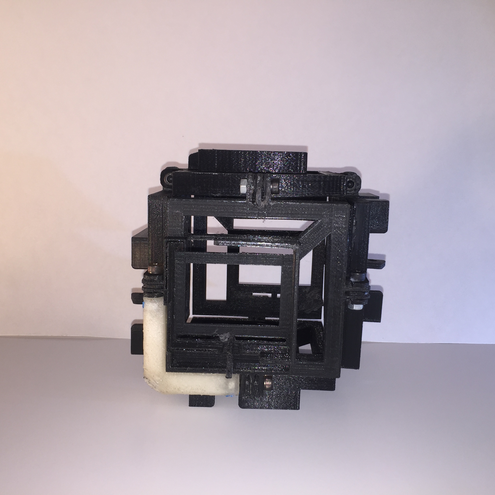This picture shows the 360 edge piece(White/Clear). This piece has small nuts embedded into it on each arm so that the pin that goes through the "protruding bit" on each side screws into one of these arms for a snug fit.

HEre, the blue spots is where one nut was embedded into the edge arm. This was done in blue PLA since I no longer had access to the nice, clear PLA for cohesion. The blue bit was added via a soldering iron as it was warming up and sunk into the hole so that the nut that is threaded by each "protruding" bolt could no longer spin or fall out.
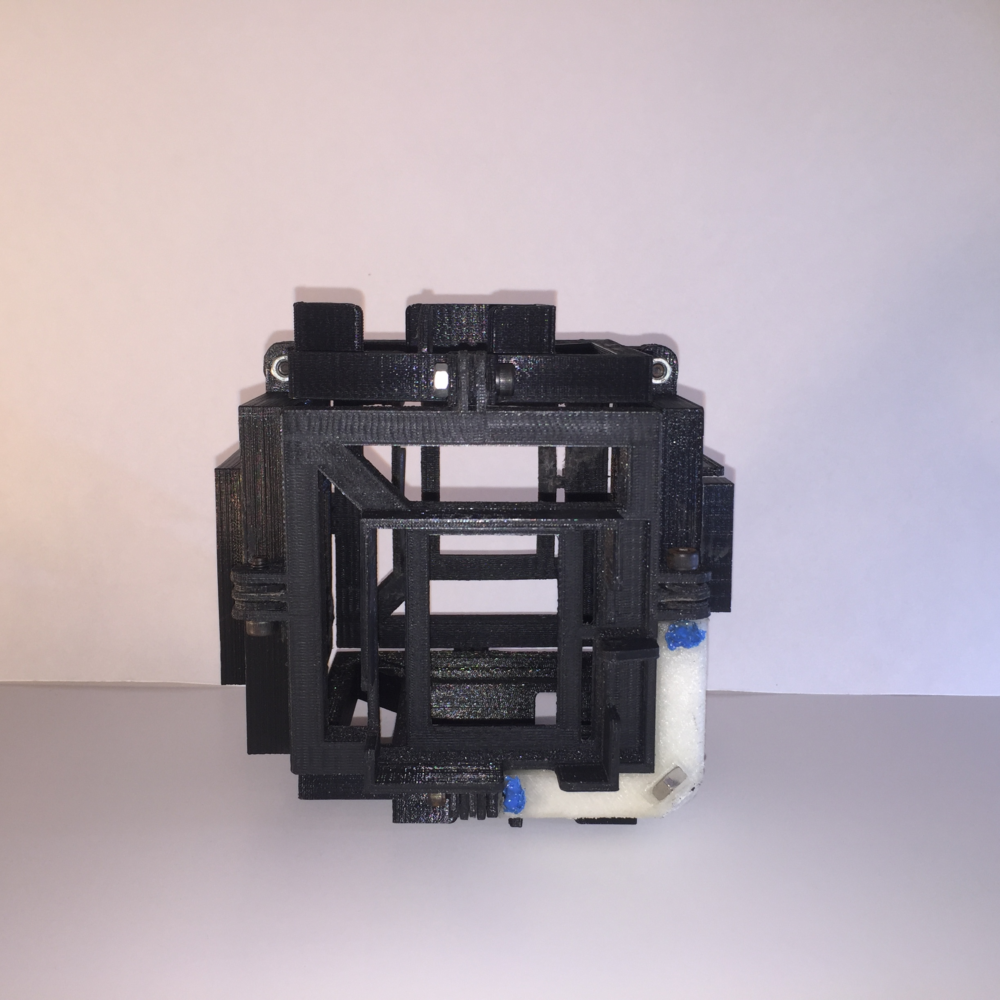Another angle showing the two other blue areas holding nuts in place. Additionally, you can see the larger 1/4" nut in the bottom right corner which fit so snug, that there was no need for reinforcing PLA. This specific nut allows the entire rig to screw onto any normal 1/4" mount.
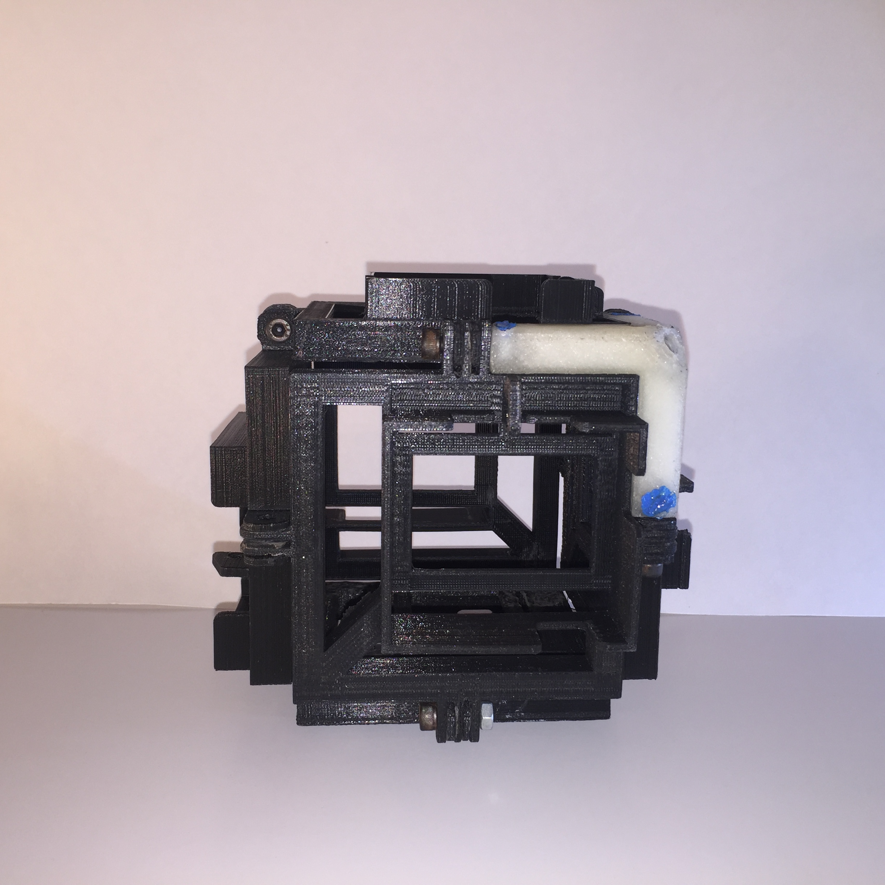 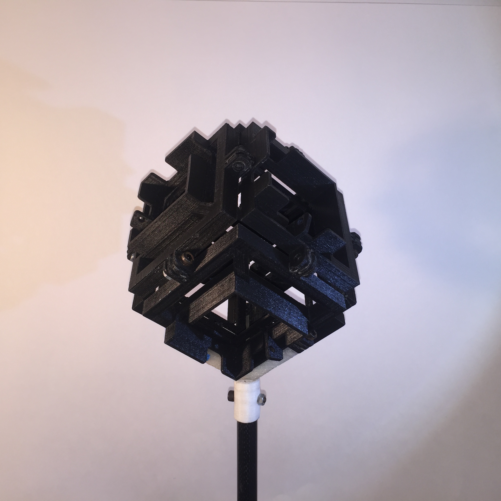Here is the complete setup sans cameras.
(Almost) Final Review
If you can see, the thing is slightly beat up. A couple of bolts have been replaced with super glue, cracks have been managed, and scrapes have left their mark, but this thing has faired well. I am in the process of getting everything organized enought to actually put together some of these videos and am excited to see the final result. I ended up shooting every sequence in 1080p at 60fps, because I found the higher resolutions did not look that much better, and I preferred the smooth look of the faster frame rates rather than the 25fps in 4k we were able to push out from having fast MicroSD cards. After organizing all the footage, I expect to put it all together in premier.
Filming with this rig was not too difficult. I had to first just turn on all the cameras and begin recording them as the remote function only worked with a single camera. After this, I would spin the entire assembly to serve as a marker for where the footage should begin, and to help sync it. I additionally clapped a few times per this instructional video I found on Youtube. This all should help me sync the images quite nicely.
In designing the overall rig, I followed the instructions of using a camera with a 4:3 aspect ratio and I did my best to ensure that the lens on each side was in the center. Additionally, each camera I chose has a 170 degree field of view meaning sides separated by 270 degrees should stitch just fine, albeit at a slight distance from the camera.
I think I had a good run putting this thing through its paceswhile travelling. I went through airport security dozens of times and did not once have to explain what it was, take it apart, or even take it out of my bag. I bashed it by dropping it and having it travel in checked luggage. In only suffered small, reparable wounds despite the treatment. In short, this thing was much more durable than I could have anticipated, and I believe the deisgn could hold up to most rigors and nearly anything with my recommended improvements.
Possible Revisions
I first just want to say again that I am thoroughly impressed witht the overall build, especially after only creating one prototype beforehand due to time/academic constraints. I only changed from the original model a couple minor things such as changing the circular hole to a rectangular hole in order to see the entire back screen. I also modeled the edge incorrectly, dimensioning each arm length to be adjacent to the "protruding" pieces with only two teeth rather than the correct three. This meant shaving a few millimeters off of each arm. One last piece that needed a little adjustment were the teeth themselves. 3D printers have a tendency to produce pieces which expand beyond the dimensions originally modeled. While I accounted for this in some areas, I did not here, which meant getting out the dremel and filing these down to a smaller width on the edges with two teeth. As far as design features I would change, here is the list.
- Change from thin teeth to thick for more robustness
- Print onto each side the color of the camera which it holds as well as the colors of the adjacent cameras to help with the stitching process.
- Make the bolt holes larger to allow for easy threading(If your allen wrench gets taken at airport security)
- Print a nice handle for the stick.
- Cut down weight even more(By printing with carbon fiber filament at 15% infill.
- Make the fitting where the rig meets the pole more robust with some sort of locking mechanism to prevent the rig from spinning off
- Add rubber bands to each side which hold the cameras flat on each side
- Add a loud clicking device to the rig to help sync the video from each camera